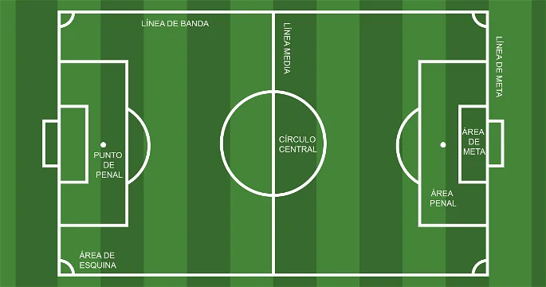

El fútbol o balompié es un deporte de equipo jugado entre dos conjuntos de once jugadores cada uno, mientras los árbitros se ocupan de que las normas se cumplan correctamente. Es, ampliamente, considerado el deporte más popular del mundo, pues lo practican unas 270 millones de personas. También se le conoce como fútbol 11 por el número de jugadores de un equipo o fútbol asociación, nombre derivado de la «Asociación del Fútbol» (The Football Association), primera federación oficial del mundo en este deporte y que utilizó ese nombre para distinguirlo de otros deportes que incluyen la palabra fútbol. En algunos países de habla inglesa, también se le conoce como soccer, abreviatura de association, puesto que el nombre de football en esos países se asocia mayoritariamente a otros deportes con esa denominación (principalmente en Estados Unidos, donde el nombre football aplica para el fútbol americano, un deporte totalmente distinto).
El guardameta, también conocido como portero, arquero o golero, es el jugador cuyo principal objetivo es evitar que la pelota entre a su meta durante el juego, acto conocido como gol. guardameta es el único jugador que puede tocar la pelota con las manos durante el juego activo, aunque solo dentro de su propia área. Cada equipo debe presentar un único guardameta en su alineación. En caso de que el jugador deba abandonar el terreno de juego por cualquier motivo, deberá ser sustituido por otro futbolista, ya sea uno que se encuentre jugando o un sustituto. Este tipo de jugadores deben llevar una vestimenta diferente a la de sus compañeros
El defensa, también conocido como defensor, es el jugador ubicado una línea delante del guardameta y una por detrás de los centrocampistas, cuyo principal objetivo es detener los ataques del equipo rival.
El centrocampista, mediocampista o volante es la persona que juega en el mediocampo en un campo de fútbol. Entre sus funciones se encuentran las de recuperar balones, propiciarla creación de jugadas y explotar el juego ofensivo.
Un delantero o atacante es un jugador de un equipo de fútbol que se destaca en la posición de ataque, la más cercana a la portería del equipo rival,y es por ello el principal responsable de marcar los goles.
